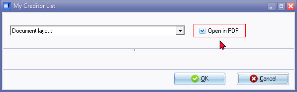
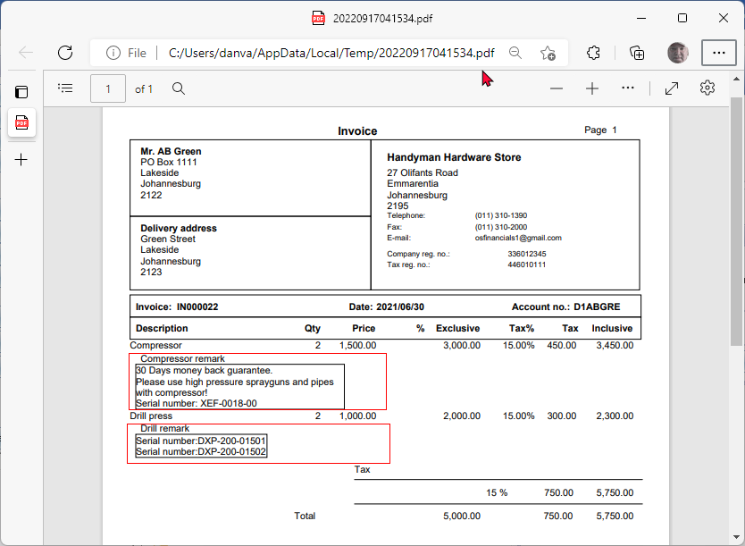
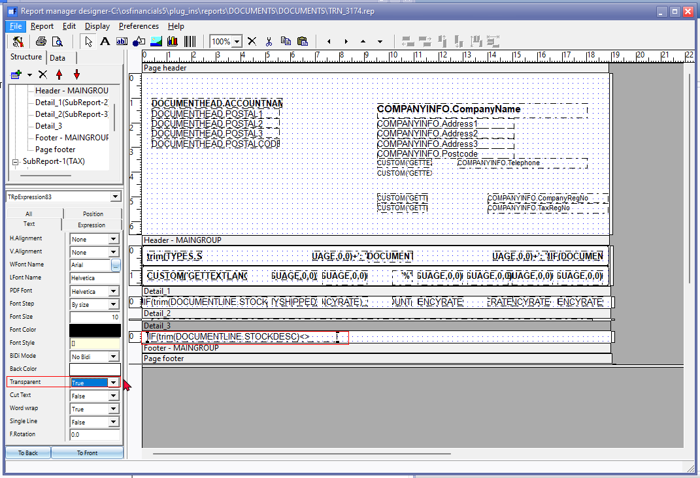
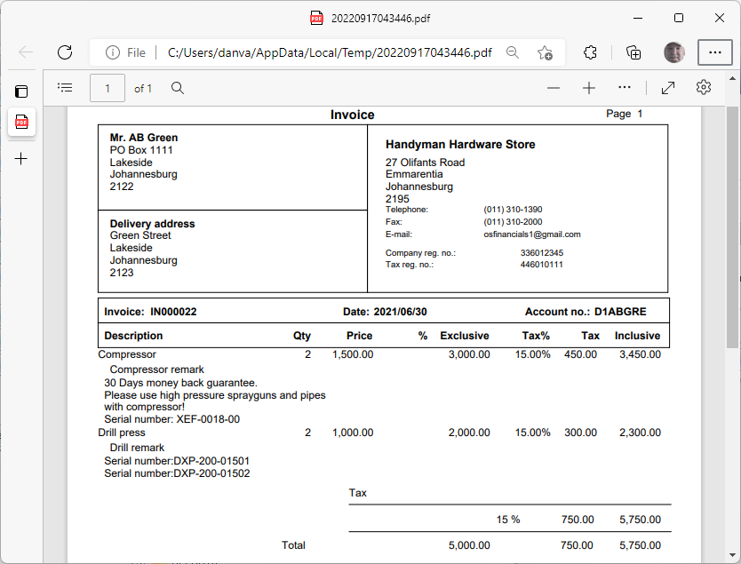

Reportman output - Transparent setting
Preview document layout file in PDF-format
If there are any adjustments, you can edit the document, as PDF format for document layout files may in most cases be sent to debtors (customers / clients) and to creditors (suppliers / vendors).
To preview the document layout file in the PDF format:
When you click on the Print preview button from the "Report man" screen, select the "Open in PDF"-option and click OK.

An example of the document layout file opened in the PDF format of your system's default PDF application (in this example, "Microsoft Edge"):

Transparent setting
The Transparent setting if set to "False" for an object (e.g. Static text, Expression, etc.) will print and display correctly when you click on the Print preview button from the "Report man" screen, or on the the  Preview report on screen icon) from the "Report manager designer" screen.
Preview report on screen icon) from the "Report manager designer" screen.
Should you Print the document layout file, in the PDF format the "Transparent" setting, if set to "False", will display a rectangular lines around the object (e.g. Expression, Static text, etc.).
To change the transparent setting:
Select the document layout file end click on Edit button of the "Report man" screen.
Select the Expression. In this example, it is the Comments displaying a rectangular border.
On the Text tab, Transparent is set to "False".
Change the Transparent to "True".

Close the "Report manager designer" screen, and save the report.
Click on the Print preview button from the "Report man" screen, select the "Open in PDF"-option and click OK.
An example of the document layout file (with the Transparent setting set to "True") opened in the PDF format of your system's default PDF application (in this example, "Microsoft Edge"):
